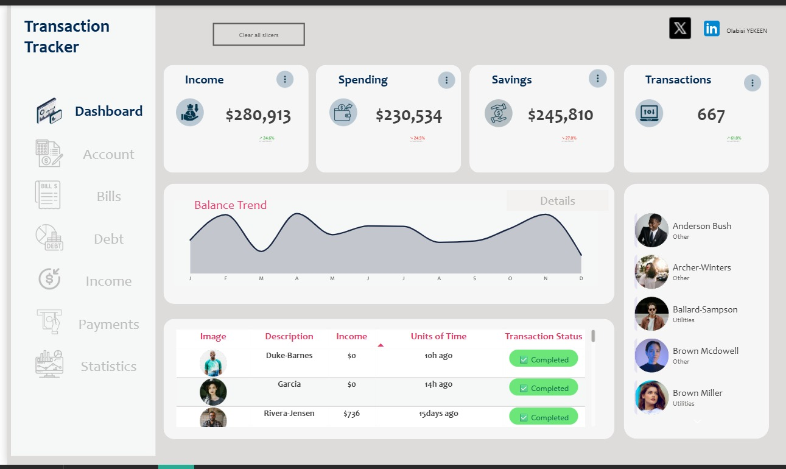

Sales Performance Dashboard
Track sales performance and unlock growth with real time insights.
This interactive dashboard showcase my skills in data cleaning, modelling, and visualization. It transforms raw data into clear actionable insigjhts for decision-making.

Power BI Sales KPI Dashboard (CRM | Daily, Weekly, Monthly Reports)
Built a Power BI dashboard to track sales performance, lead conversion, and operational efficiency using CRM data. Includes daily, weekly, and monthly reports with KPIs like revenue, conversion rate, revenue per lead, and responsiveness metrics. Features: • Sales performance by salesperson, brand, and source • Lead response tracking and no-contact rate • Operational metrics like quote accuracy and data completeness Impact: Identified key gaps including a 59% no-contact rate, helping uncover growth bottlenecks and improve decision-making.
Optimizing Shipment Operations with Power BI
Developed an interactive Power BI dashboard to monitor shipment and logistics performance. Analyzed key metrics such as delivery times, transit efficiency, shipment volumes, and transportation costs. Designed visualizations to identify delays, track on-time deliveries, and optimize shipment routes. Demonstrated skills in data modeling, DAX calculations, and interactive reporting to support actionable insights in logistics operations. Tools & Skills: Power BI, Data Modeling, DAX, Data Visualization, Logistics Analytics

Project Performance & Funding Analytics Dashboard
Built an interactive Project Performance Dashboard to monitor funding allocation, project progress, and team performance. Designed KPI metrics, engagement breakdown, and milestone tracking using Power BI. Implemented data modeling and DAX measures to enable dynamic filtering across project types and timelines. The solution provides stakeholders with clear visibility into budget utilization and project execution efficiency.

Personal Finance Dashboard | Power BI Transaction Tracker
Built a clean and interactive Personal Finance Dashboard to track income, spending, savings, and transaction activity. Designed KPI cards, balance trend analysis, and transaction tables for quick financial insights. Implemented a structured data model and DAX measures to enable dynamic reporting. The dashboard provides a clear overview of financial health and supports better decision-making through intuitive visuals.

Consumer Complaints Dashboard - US Financial Sector
Developed an interactive Power BI dashboard analyzing consumer complaints in the US financial sector. The project tracks complaint types, trends over time, company performance, and resolution rates. Designed visualizations to identify high-risk areas, monitor complaint resolution efficiency, and provide actionable insights for improving customer experience. Demonstrated skills in data cleaning, data modeling, DAX calculations, and interactive reporting to support data-driven decision-making. Tools & Skills: Power BI, Data Modeling, DAX, Data Visualization, Consumer Analytics

Wine Production Analysis Dashboard
Developed an interactive Power BI dashboard to explore global wine production trends from 2012–2016. Key insights include peak production in 2013, Italy as the leading producer, and a 50.8% market concentration among the top three countries. The dashboard enables dynamic filtering and comparative analysis across countries and years.

Analyzing Crime Patterns in London by Income Deprivation Decile.
London is a highly diverse city with significant socio-economic inequality across boroughs and neighborhoods. Income deprivation—measured through deciles where 1 represents the most deprived areas and 10 the least deprived—is often linked to variations in crime levels and types. This interactive Dashboard shows Crime Patterns in London by Income Deprivation Decile.